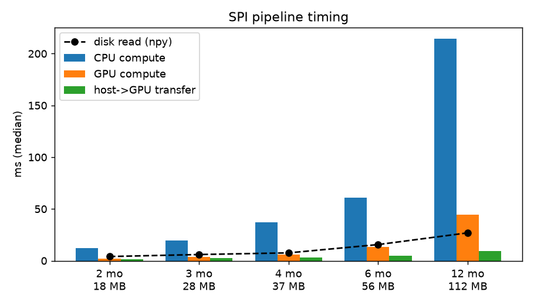
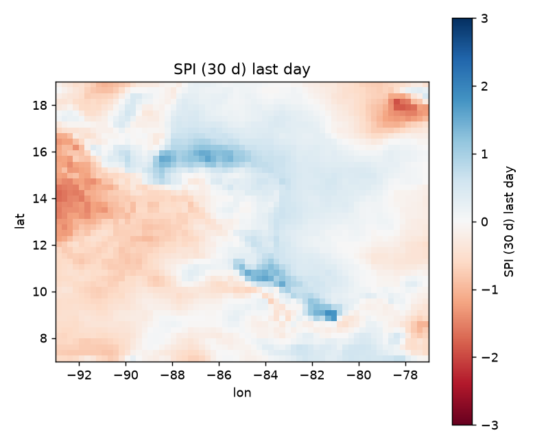

Índice de sequía para cada celda de Centroamérica,
calculado en CPU y en GPU
Javier España (23361) · Angel Esquit (23221) · José Mérida (201105)
CC3069 Computación Paralela y Distribuida · Universidad del Valle de Guatemala · Caso 4
Don Chepe es un personaje ilustrativo.
Se suman las 24 horas de cada día y se pasa a milímetros. Son 366 días por celda.
Suma de los últimos k = 30 y 90 días con una suma prefija (scan). Cada ventana cuesta una resta.
Con las ventanas de cada celda se estiman la forma α y la escala β (aproximación de Thom) y la fracción q de ventanas sin lluvia.
Se ve qué tan rara es cada ventana en su celda y se convierte a una normal estándar.
| Etapa | Cómo trabaja la GPU | CPU (ms) | GPU (ms) | Speedup |
|---|---|---|---|---|
| Lluvia horaria a diaria | Una suma por celda y día, todas a la vez | 4.2 | 0.4 | 10.1× |
| Acumulado móvil (scan) | Suma prefija sobre el tiempo, una columna por celda | 2.1 | 0.1 | 17.9× |
| Gamma, CDF y puntaje z | Un hilo por celda y ventana, sin comunicación | 127.6 | 32.8 | 3.9× |
| Días secos consecutivos | Depende del día anterior, secuencial en el tiempo | 1.9 | 5.6 | 0.3× |

El MAGA necesita actualizar el mapa cuando llegan datos y probar otras definiciones de sequía. Así de largo sería una actualización completa.
| Escenario | GB | CPU | GPU | |
|---|---|---|---|---|
| A | 12 meses, 0,25°, 2 escalas (medido) | 0.1 | 0.24 s | 0.08 s |
| B | 40 años, 0,25°, 2 escalas | 4.5 | 10 s | 3 s |
| C | 40 años, 0,1° (ERA5-Land), 2 escalas | 28.0 | 60 s | 20 s |
| D | como C con 12 escalas (1 a 12 meses) | 28.0 | 6.0 min | 2.0 min |

Hersbach, H. et al. (2023), ERA5 hourly data on single levels from 1940 to present, C3S CDS, doi:10.24381/cds.adbb2d47 (CC-BY 4.0).
Copia ARCO-ERA5 (Google Cloud Public Datasets), github.com/google-research/arco-era5.
McKee, Doesken y Kleist (1993), The relationship of drought frequency and duration to time scales.
NumPy, SciPy, xarray, Zarr, CuPy y Matplotlib. NVIDIA CUDA, docs.nvidia.com/cuda
Código en github.com/TonitoMC/cuda-challenge-2